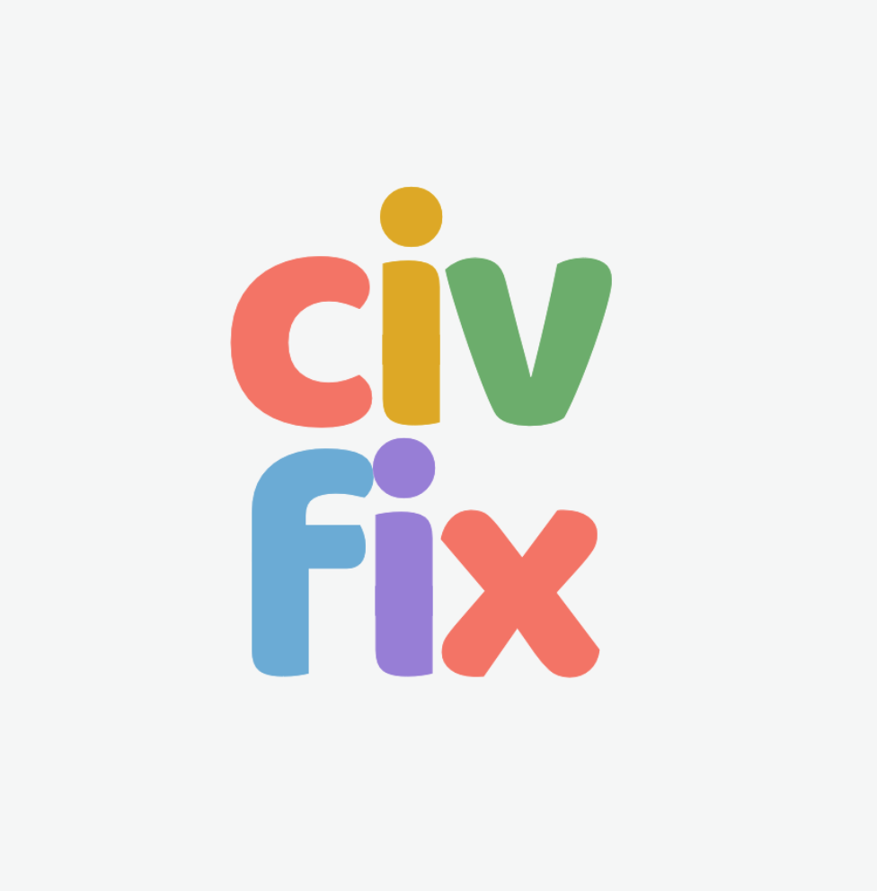
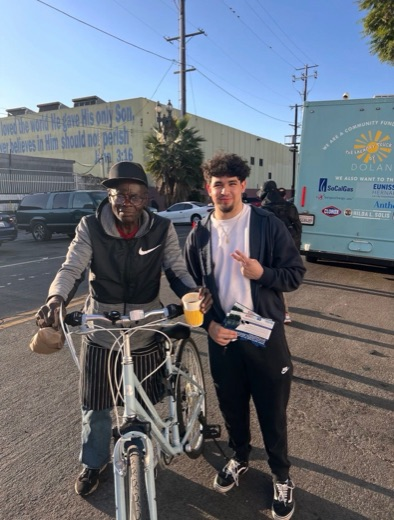
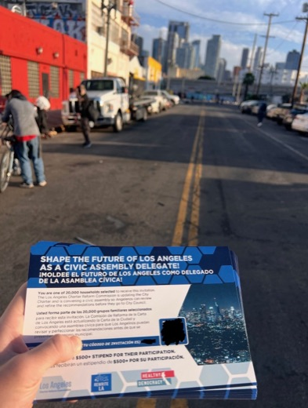
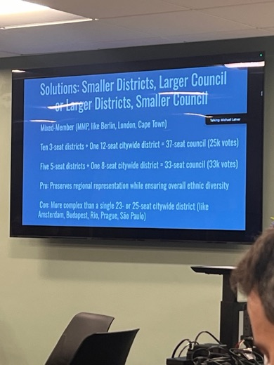
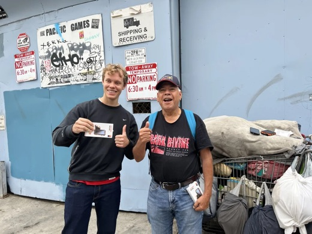
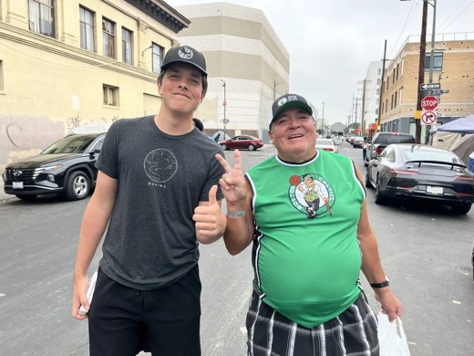
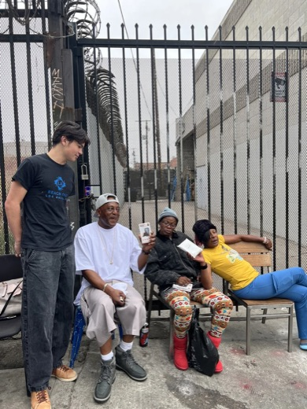
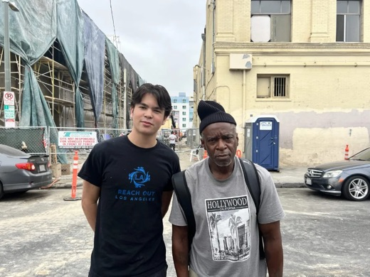
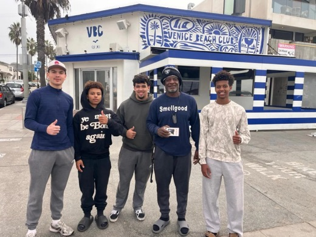

Press
Writing about Reach Out LA? Everything you need is on this board.
Below you’ll find a ready-to-use description of our work, fast facts, our logo, photos you’re welcome to publish (with the credits shown), our leadership, and our latest announcements.
Download the full press kit (ZIP, 4.3 MB)About Reach Out LA
Short version
Reach Out LA is a Los Angeles 501(c)(3) nonprofit that uses software and research to connect residents with each other and their local governments.
Full version
Reach Out Los Angeles (Reach Out LA) is a 501(c)(3) nonprofit that uses software and research to connect residents with each other and their local governments. Founded in Los Angeles in December 2024, it began with high school students surveying unhoused residents on Skid Row. Today it runs two programs: civfix, a reporting and volunteer hub where anyone, anywhere in the world, can report local problems like illegal dumping and potholes, have them sent to the right agency, and organize neighborhood cleanups; and an unhoused research program that brings the experiences of people experiencing homelessness into policy conversations.
Fast facts
- Legal name
- Reach Out Los Angeles INC
- Status
- 501(c)(3) nonprofit
- EIN
- 41-2454206
- Founded
- December 2024, Los Angeles
- Address
- 3214 Veteran Ave, Los Angeles, CA 90034
- Programs
- civfix and unhoused research
- President
- Roman Aytur
Logo

civfix logo
PNG, 976 × 992 pixels.
- civfix is always written in lowercase, even at the start of a sentence. Never capitalize the c or the f.
- Please don’t change the logo’s colors, stretch it, or add effects.

Photos
Free to publish with the credit shown
Outreach and the 2026 City Charter Civic Assembly
-

Vice President of Unhoused Operations Andrew Tijerino during outreach for the Civic Assembly.
Photo: Roman Aytur
Download (JPG, 1284 × 1693) -

Invitations to become a Civic Assembly delegate.
Photo: Roman Aytur
Download (JPG, 1284 × 1698) -

Delegates weighed options for the size and structure of the City Council.
Photo: Roman Aytur
Download (JPG, 1500 × 2000)


Street outreach
-

Reach Out LA street outreach.
Courtesy of Reach Out LA
Download (JPG, 1000 × 750) -

Reach Out LA street outreach.
Courtesy of Reach Out LA
Download (JPG, 1000 × 750) -

Reach Out LA street outreach.
Courtesy of Reach Out LA
Download (JPG, 1000 × 1333) -

Reach Out LA street outreach.
Courtesy of Reach Out LA
Download (JPG, 936 × 702) -

Reach Out LA volunteers and neighbors.
Courtesy of Reach Out LA
Download (JPG, 936 × 702)


Leadership
Headshots are free to publish. Credit: Courtesy of Reach Out LA. Read full bios on our Team page.